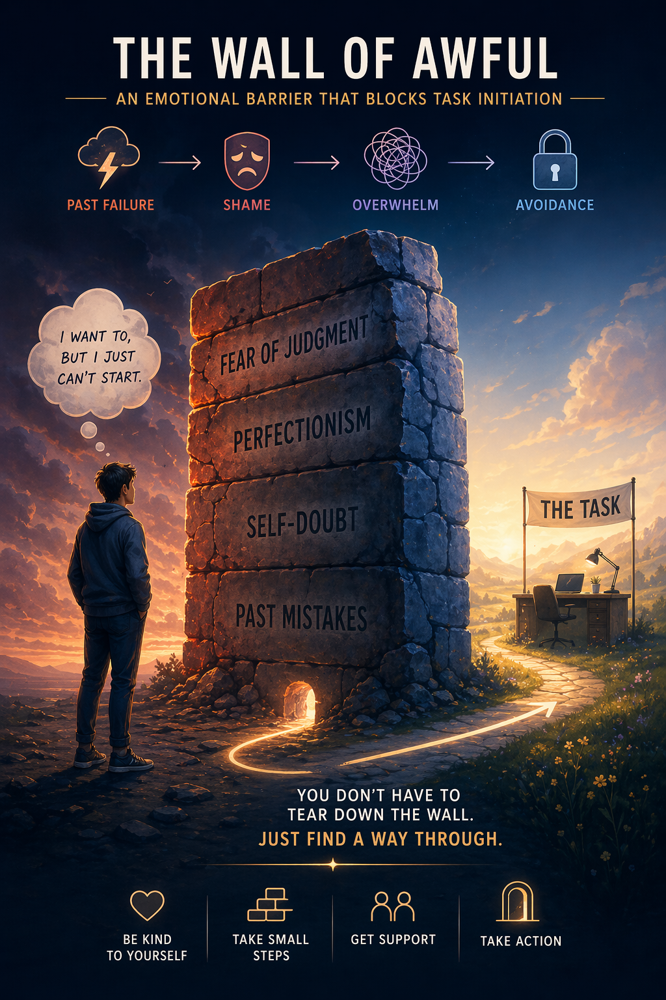
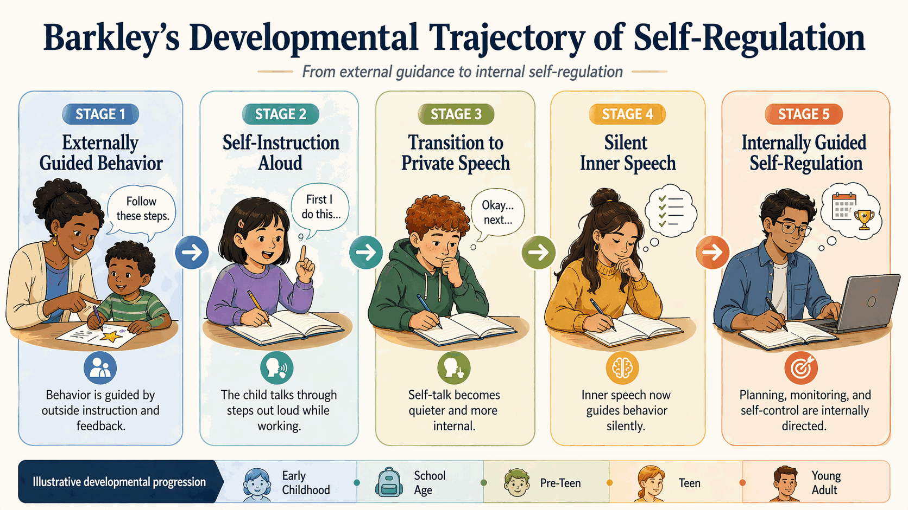

Three Stages of Inhibition
This sequence helps explain why students can "know what to do" yet still struggle in point-of-performance contexts. Coaching makes inhibition supports more visible and repeatable.
Inhibition as the Keystone
Russell Barkley's model explains executive function as one unified system of self-regulation, with response inhibition as the gate that everything else depends on.
EF as Unified Self-Regulation
In Barkley's framework, executive function is a single, unified system of self-regulation — defined as any action directed at oneself to change one's own behavior so as to change the future. This is a radical reframing: EF reaches beyond intelligence or knowledge and centers on the ability to direct behavior across time toward the future.
Response Inhibition is the foundational prerequisite for all other executive capacities. Without the ability to "pause" — to inhibit the prepotent response — the brain cannot engage any of the four dependent functions. Think of it as the "Stop, Look, Listen" mechanism: you must first stop the automatic response before you can look at the situation and listen to your internal guidance.

The Four Secondary Functions
When Response Inhibition creates the necessary "pause," these four dependent functions can engage. Each represents a different dimension of internalized, self-directed behavior.
Nonverbal Working Memory
The "Mind's Eye"
The capacity to hold events in mind, re-experience them, and use visual imagery to anticipate future outcomes. This is the brain's "mental video player" — it allows us to replay past events and preview future scenarios.
The "Time Blind" Concept
In Barkley's teaching language, many clients with EF deficits can seem functionally "time blind" because future consequences are harder to hold in mind with enough salience to guide behavior. The future can feel abstract rather than immediate. That framing helps explain chronic lateness, missed deadlines, and weak long-range planning without reducing them to moral failure.
Verbal Working Memory
The "Mind's Voice"
Internalized speech — the running inner monologue that guides behavior. This is how we talk ourselves through problems, give ourselves instructions, and rehearse plans. It evolves from the external speech of early childhood ("I need to put my shoes on first, then my coat") into the silent self-talk of adulthood.
When this function is impaired, clients struggle to use self-instruction to guide behavior, follow multi-step directions, and internalize rules without constant external reminders.

Self-Regulation of Affect/Motivation
The "Mind's Heart"
The capacity to moderate emotional states in order to sustain goal-directed action. This function recognizes a critical truth: emotion is not separate from cognition — it drives planning, persistence, and problem-solving.
Clients with impairment in this area display emotional reactivity, low frustration tolerance, and difficulty generating the internal motivation needed to initiate or persist with uninteresting tasks. They are driven by the emotional urgency of the moment rather than the logical importance of future goals.
Reconstitution
The "Mind's Playground"
The capacity for analysis and synthesis — breaking down observed behaviors and sequences into their component parts, then recombining them into entirely novel responses. This is the seat of creativity and flexible problem-solving.
When this function is impaired, clients tend toward rigid, repetitive approaches to problems. They struggle to generate alternative strategies, adapt plans to new information, or combine ideas from different domains into innovative solutions.

The Extended Phenotype
One of Barkley's most useful concepts for coaching practice is the Extended Phenotype — the idea that executive regulation is supported not only by the person but also by the environment they build around themselves. Just as a beaver's dam is part of its phenotype, a person's use of external tools — timers, planners, checklists, visual schedules, phone alarms — can be understood as part of their broader executive support system.
Coaching Implication
This concept is revolutionary for reducing shame. Prosthetic tools are not "crutches" or signs of weakness — they are essential, evidence-informed supports that extend the brain's limited executive capacity into the environment. A person with EF deficits who uses a planner is no different from a person with poor vision who wears glasses. The coach's role is to help design and implement these environmental extensions.
Sources
The model described on this page comes from Barkley's own published work. Start here if you want the primary material rather than an interpretation of it.
Primary sources
- Barkley, R. A. (1997). Behavioral inhibition, sustained attention, and executive functions: Constructing a unifying theory of ADHD. Psychological Bulletin, 121(1), 65–94. — the paper that sets out the unified model in which response inhibition is the prerequisite for the secondary executive functions. APA PsycNet record
- Barkley, R. A. (2012). Executive Functions: What They Are, How They Work, and Why They Evolved. New York: The Guilford Press. — book-length treatment of the evolutionary and internalization account, and the source for the extended phenotype. Publisher page
Lecture series
Barkley's 30 Essential Ideas You Should Know About ADHD, in his own words:
- Part 1B — 30 Essential Ideas You Should Know About ADHD
- Part 5A — 30 Essential Ideas You Should Know About ADHD
- Part 7B — 30 Essential Ideas You Should Know About ADHD
- Part 9C — 30 Essential Ideas You Should Know About ADHD
- Part 10E — 30 Essential Ideas You Should Know About ADHD
- Open citations and source trails